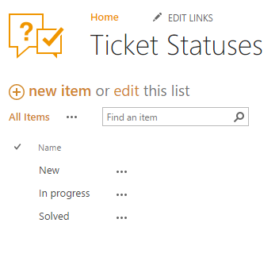
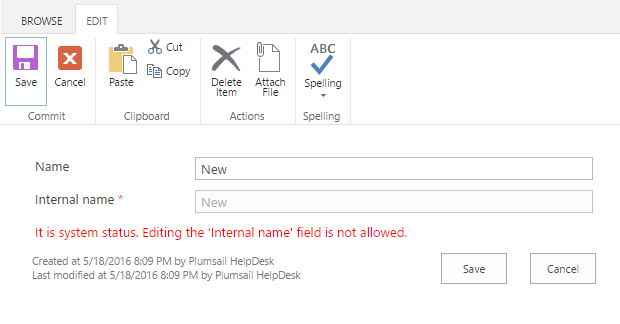

Statuses customization¶
You can translate ticket statuses into a language other than English. All ticket statuses are stored in the “Ticket Statuses” list that can be found in the “Site Contents” page.

Each status has two fields:
| Name: | A display name of the status. This value is displayed in the UI: views, forms and etc. |
|---|---|
| Internal Name: | An internal name of the status that is used in triggers, e-mail synchronization and other core processes. |
By default there are three statuses and two of them are “system” (“New” and “Solved”). “System” status means that you cannot remove it or change its “Internal Status” field.
To translate the statuses, change their “Name” field.
